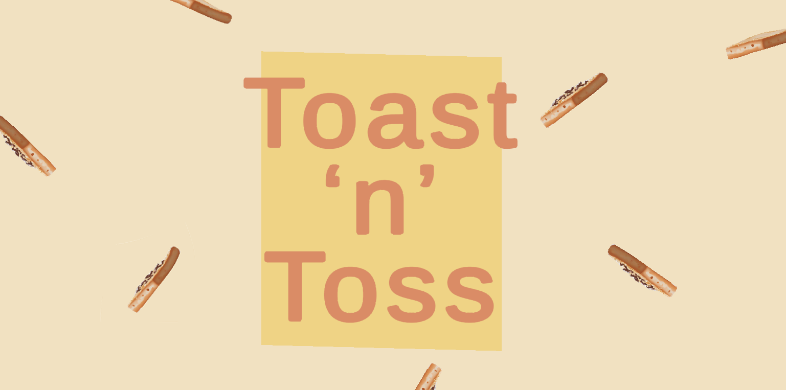
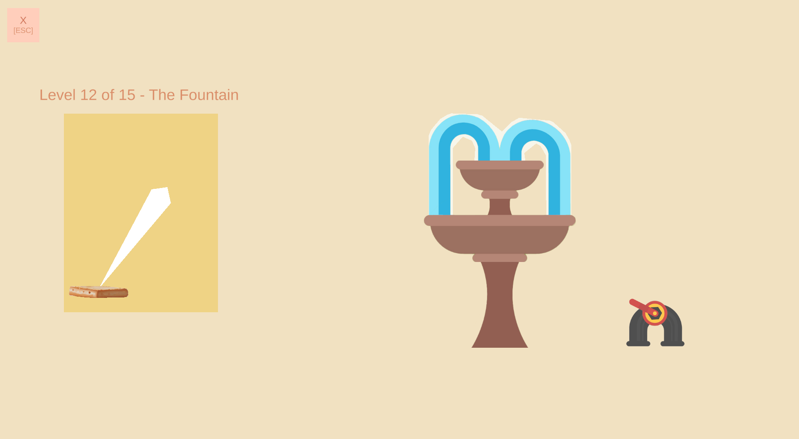
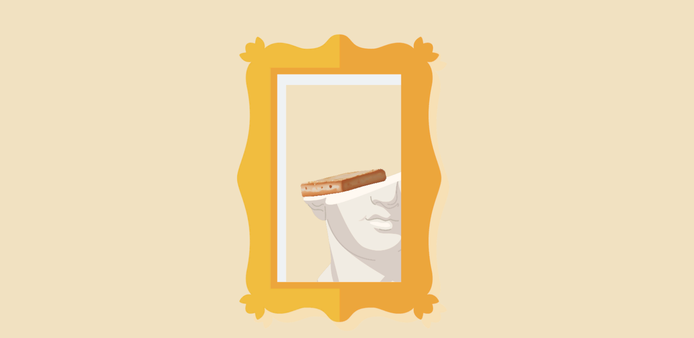

Toast 'n' Toss
Launch toast into the air, master the perfect toss, and interact with playful physics-driven environments! Whether it lands gracefully or crashes into chaos, every throw is a new challenge.
This project was developed by me (haoqianz@umich.edu) using C# and the Unity engine. Some art assets were provided by Freepik.com, while others were created and refined using Photoshop, Stable Diffusion, and hand-drawn techniques. Music was sourced from Pixabay.com.
Each level introduces unique obstacles and environmental interactions, making every toss unpredictable yet satisfying. With a blend of physics-driven gameplay and lighthearted visuals, Toast ‘n’ Toss delivers a fun and engaging experience for casual players and perfectionists alike!
Play now: https://lekaaa.itch.io/toast-n-toss